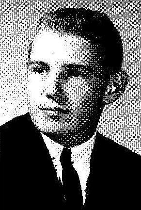
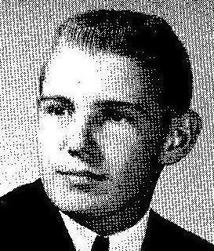
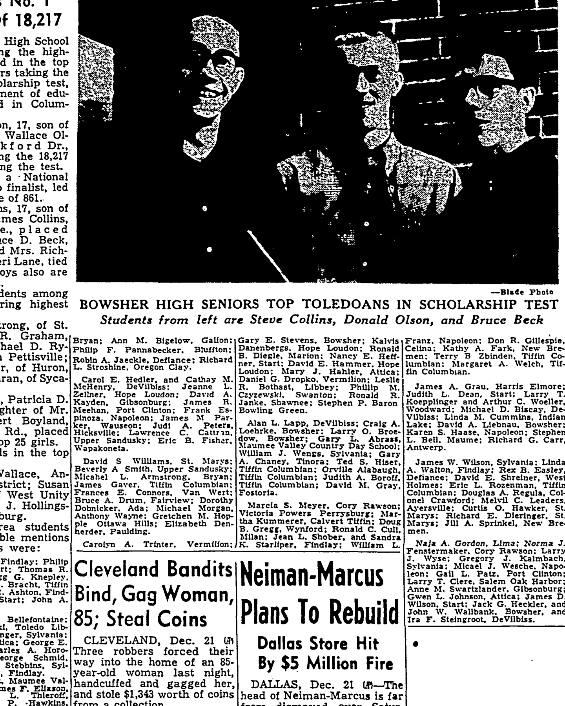

Kalvis Danenbergs b. 1946
Peter's uncle.
Living. As for every living relative on this site, the birth date is given by year only, and no current address is shown.
Also recorded as Kalvis (Melinda); Kalvis Danenberg.
Kalvis Danenbergs was born in 1946 in Haunstetten DP camp, Augsburg, Bavaria, Germany3,4,5, the son of Arvīds Fricis Danenbergs and Elvīra Antonija Sirlaka16. He arrived at Boston, Massachusetts, United States on 7 Jul 194914.
Family
- Parents
- Arvīds Fricis Danenbergs 1913–1996 and Elvīra Antonija Sirlaka 1912–2011 tradition
- Partner
- Melinda Lee Berger b. 1947
- Children
- Justin Danenbergs b. 1975 tradition
Life events
| Event | Date | Place and details |
|---|---|---|
| Born | 1946 | Haunstetten DP camp, Augsburg, Bavaria, Germany Preferred version: His DP record: 1946, Haunstetten. Raimonds's MyHeritage tree (2026) gives 1947, no record cited.3,4,5 |
| Born | 1947 | According to an online family tree6 |
| Arrived | 7 Jul 1949 | Boston, Massachusetts, United States14 |
| Lived | 13 Jul 1949 | Liberty Township, Mercer County, Ohio, United States7,8 |
| Lived | bet 1951 and 1965 | Tiffin, Ohio, United States9 |
| Education | bet 1955 and 1956 | Bascom, Seneca County, Ohio, United States In the third grade at Hopewell-Loudon School, Bascom, Seneca County, Ohio, in the school year 1955–56, photographed in Mrs Norma Goodwin's class. His twin sister Līga is in the parallel third-grade photograph (Mrs Pauline Fruth's class) and their elder brother Peter is in the eighth grade. THIS IS…11 |
| Education | 24 Sep 1964 | Bascom, Seneca County, Ohio, United States Senior at Hopewell-Loudon High School (Bascom, Seneca County, Ohio); named a National Merit Scholarship semifinalist (24 Sep 1964) and received honorable mention among 18,217 Ohio high school seniors in the 1964 Ohio General Scholarship Test (21 Dec 1964); also played varsity basketball for…12 |
| Note | 3 Jan 1971 | Columbus, Ohio, United States Applied for a marriage licence in Franklin County, Ohio (published 3 January 1971): Kalvis Danenbergs, age 24, student, residing at [address omitted], Columbus, and Melinda L. Berger, age 23, residing at [address omitted], Columbus.15 |
| Lived | bet 28 Sep 1973 and 2026 | Midland, Clinton County, Ohio, United States10 |
| Work | 1 Aug 2000 | Wilmington, Clinton County, Ohio, United States A registered pharmacist (R.Ph.) at Clinton Memorial Hospital, Wilmington, Ohio. He is thanked by name in the acknowledgements of a peer-reviewed clinical review — "The authors thank Karen Mandell, Pharm.D., University of Cincinnati, and Kalvis Danenbergs, R.Ph., Clinton Memorial Hospital,…13 |
Photographs


Records





Sources
- Elvira A. Danenbergs (Nee Sirlaks), Milwaukee Journal Sentinel, 23 June 2011.
Loving mother of Peter (Kathleen), Liga (Wolfhart) Schubach and Kalvis (Melinda). Dear grandmother of Liga, Peter and Justin. Great-grandmother of Mneme.
Named as son in Elvīra's obituary; spouse Melinda.
- MyHeritage family tree 'Dzimta' of Peter's third cousin (his family site), member GEDCOM export of 26 Oct 2026, I500162 (person-6500162), GEDCOM lines 10139–10172.
NAME Kalvis /Danenberg/
His confirmed Smart Match with another tree: Voroņinu dzimtas lapa, https://www.myheritage.lv/person-1002321_OYYV6GENXOY2D7YW6XGE4NH6BKEVORA_OYYV6GENXOY2D7YW6XGE4NH6BKEVORA/kalvis-danenbergs (added by confirming the match).
- Standesamt Augsburg, Form 6, list of births of Latvians, 18 June 1947, DE ITS 2.1.1.3 BY 011 6 LET ZM, DocID 85921424.
25. Danenbergs | Liga | [date] Augsburg | w | Arvids D. | Lettl. | Elvira, geb. Sirlaks | Lettl. | Haunstetten, Lkr. Augsbg. / 26. " | Kalvis | … | m
LIVING. Twins. Parents: Arvids D. and Elvira, née Sirlaks. Two birth certificates per child were enclosed with the list.
- Declaration of Intention No. 134, Arvids Danenbergs, Mercer County Common Pleas, Celina, Ohio, 14 Aug 1950.
Kalvis Danenbergs--M--1946-Augsburg, Germany--Rockford, Ohio / Liga Danenbergs-F--1946-Augsburg, Germany--Rockford, Ohio
From both parents' declarations. The 1950 census has 'Kalvis V'.
- Kalvis Danenbergs, Age 79, Midland, OH.
Overview of Kalvis Danenbergs — Lives in: Midland, Ohio. DOB: 1946
CONFIRMS the Arolsen date and SETTLES the open conflict recorded in data/people/kalvis-danenbergs.yaml. Raimonds's MyHeritage tree gives "1947" with no record cited; the Ohio Secretary of State's voter file, as republished by Ohio Residents Database, gives "DOB: 1946". That is a third independent agreement with the 1946 Arolsen civil registry list and with both parents' 1949 naturalisation declarations.
- MyHeritage family tree 'Dzimta' of Peter's third cousin (his family site), member GEDCOM export of 26 Oct 2026, I500162 (person-6500162), GEDCOM lines 10139–10172.
BIRT · 1947
- Eight Latvian DP's Will Make Homes In Mercer Co., The Journal-Gazette (Fort Wayne, Indiana), 14 July 1949, p. 13.
The family of six includes Arvids Danenbergs. 36. his wife. Elvira. 37, their three children. Peter. 6, a set of twins. Liga and Kalvis. 2>2, and Mrs Dancnherg’s mother. Mrs. Emma Sirlaks
Translation: The family of six includes Arvids Danenbergs, 36, his wife, Elvira, 37, their three children, Peter, 6, a set of twins, Liga and Kalvis, 2 1/2, and Mrs. Danenbergs's mother, Mrs. Emma Sirlaks.
Residing at age 2 1/2 with parents Arvids and Elvira Danenbergs, brother Peter (6), twin sister Liga (2 1/2), and maternal grandmother Emma Sirlaks at the tenant house on the D. R. Smalley farm in Liberty Township, Mercer County, Ohio.
- Household of Arwids F Danenbergs, Liberty Township, Mercer, Ohio.
Kalvis V Danenbergs: Race = White; Birth 1947 @ Germany; Residence 1949; Census 10 April 1950 @ Liberty Township, Mercer, Ohio, United States; RelationshipToHead=Son; Age=3
After landing in Boston on 7 July 1949, he lived with his family on the farm of sponsor Robert M. Hawk in Liberty Township, Mercer County, Ohio (Rockford mailing address), enumerated as 'Kalvis V Danenbergs' (age 3) in the 10 April 1950 US Census.
- Tiffin, Seneca County, Ohio residence of the Danenberg family (1951–1960).
1953 Danenbergs Elvira Mrs pharm Mercy Hosp h23 Apple / 1956 Danenbergs Elvira (Arvids) pharmacist Mercy Hosp r RD 2 / 1958 Danenbergs Elvira Mrs pharm Mercy Hosp r RD 2 / 1959 Danenbergs Elvira Mrs pharm Mercy Hosp r RD 2 … Third Grade MRS. NORMA GOODWIN Heidelberg College … Sccmzrl [Second] Row: Nickie Chapman, Kalvis Danenbergs.
Moved with his family after about a year on the Hawk farm to Tiffin, Seneca County, Ohio (where his parents are recorded at [address omitted] in 1953 and on their [address omitted] Tiffin farm in 1956–1959 R. L. Polk city directories), attending third grade at Hopewell-Loudon School in nearby Bascom in 1955–1956.
- Kalvis Danenbergs — Voting Profile.
Kalvis Danenbergs (age 79) is currently listed at [address omitted], Midland, 45148 Ohio … Kalvis is registered to vote since September 28, 1973 in Clinton County … Voter Status: Active … Precinct Code: Jefferson … Village: Jefferson Township
Registered to vote in Clinton County, Ohio on 28 September 1973 — the same day as Melinda — and still an active registered voter there in 2026. Address [address omitted], Midland, Ohio 45148, in Jefferson Township (precinct "Jefferson", Blanchester Local school district, Ohio congressional district 15). Ohio Residents Database says he is "not affiliated to any political party"; voterrecords.com's street index says "Republican Party" — recorded both ways, since voterrecords returns 403 and only its snippet could be read.
- Scarlet and Grey 1956 — Third Grade, Mrs Norma Goodwin.
Third Grade MRS. NORMA GOODWIN Heidelberg College … Sccmzrl [Second] Row: Nickie Chapman, Kalvis Danenbergs. Ken Yamloert [Lambert], Jim Chaney, Mark Leistcr. Bobby Lowery, Mrs. Goodwin.
In the third grade at Hopewell-Loudon School, Bascom, Seneca County, Ohio, in the school year 1955–56, photographed in Mrs Norma Goodwin's class. His twin sister Līga is in the parallel third-grade photograph (Mrs Pauline Fruth's class) and their elder brother Peter is in the eighth grade. THIS IS THE FIRST DATED EVIDENCE OF WHERE THE FAMILY LIVED IN THE OHIO YEARS: the 1949 manifest landed them at Rockford, Mercer County, in western Ohio, and by the mid-1950s they were at Bascom, in Seneca County, about 80 miles north-east of it.
- Results Of 1964 Scholarship Tests, The Blade (Toledo, Ohio), 21 December 1964, p. 8; and 113 In Area Reach Scholarship Semifinals, The Blade (Toledo, Ohio), 24 September 1964, p. 12.
Toledo and area students receiving honorable mentions and their schools were: ... Kalvis Danenbergs. Hope Loudon: Ronald B. Diegle, Marion: Nancy E. Heffner, Start; David E. Hammer. Hope Loudon;
Translation: Toledo and area students receiving honorable mentions and their schools were: ... Kalvis Danenbergs, Hope-Loudon; Ronald B. Diegle, Marion; Nancy E. Heffner, Start; David E. Hammer, Hope-Loudon;
Senior at Hopewell-Loudon High School (Bascom, Seneca County, Ohio); named a National Merit Scholarship semifinalist (24 Sep 1964) and received honorable mention among 18,217 Ohio high school seniors in the 1964 Ohio General Scholarship Test (21 Dec 1964); also played varsity basketball for Hopewell-Loudon (9 Feb 1964).
- Appropriate Prescribing of Oral Beta-Lactam Antibiotics — Acknowledgements.
The authors thank Karen Mandell, Pharm.D., University of Cincinnati, and Kalvis Danenbergs, R.Ph., Clinton Memorial Hospital, Wilmington, Ohio, for editorial assistance with the manuscript.
A registered pharmacist (R.Ph.) at Clinton Memorial Hospital, Wilmington, Ohio. He is thanked by name in the acknowledgements of a peer-reviewed clinical review — "The authors thank Karen Mandell, Pharm.D., University of Cincinnati, and Kalvis Danenbergs, R.Ph., Clinton Memorial Hospital, Wilmington, Ohio, for editorial assistance with the manuscript" — in American Family Physician, 1 August 2000 (Holten KB, Onusko EM, "Appropriate Prescribing of Oral Beta-Lactam Antibiotics", AFP 62(3):611–620, since cited over 330 times). Wilmington is the county seat of Clinton County, nine miles from his house at Midland. His son Justin is also a pharmacist.
- Manifest of In-bound Passengers (Aliens), No. 27, USAT General Blatchford, Bremerhaven 28 June 1949 → Boston 7 July 1949, NAID 76075234, image 80 of 651, object 76075314, file 41253_B124264-01101.jpg, lines 4–8.
DANENBERGS Arvids Rockford, Ohio 36 Ma Md I-849016 Latvian … ADMITTED JUL 7 1949 BOSTON, MASS.
LIVING. Manifest 27, lines 7 (Kalvis, I-849019) and 8 (Līga, I-849020); age 2; IRO roll nos. 611–612, country of birth Germany.
- Marriage Licenses, The Columbus Dispatch (Columbus, Ohio), 3 January 1971, p. 79.
Kalvis Danenbergs, 24, student. of [address omitted], and Melinda L. Berger, 23, of [address omitted].
Translation: Kalvis Danenbergs, 24, student, of [address omitted], and Melinda L. Berger, 23, of [address omitted].
Applied for a marriage licence in Franklin County, Ohio (published 3 January 1971): Kalvis Danenbergs, age 24, student, residing at [address omitted], Columbus, and Melinda L. Berger, age 23, residing at [address omitted], Columbus.
- Peter's tree, danenberg.sql, 2007–2015, parentages 41.